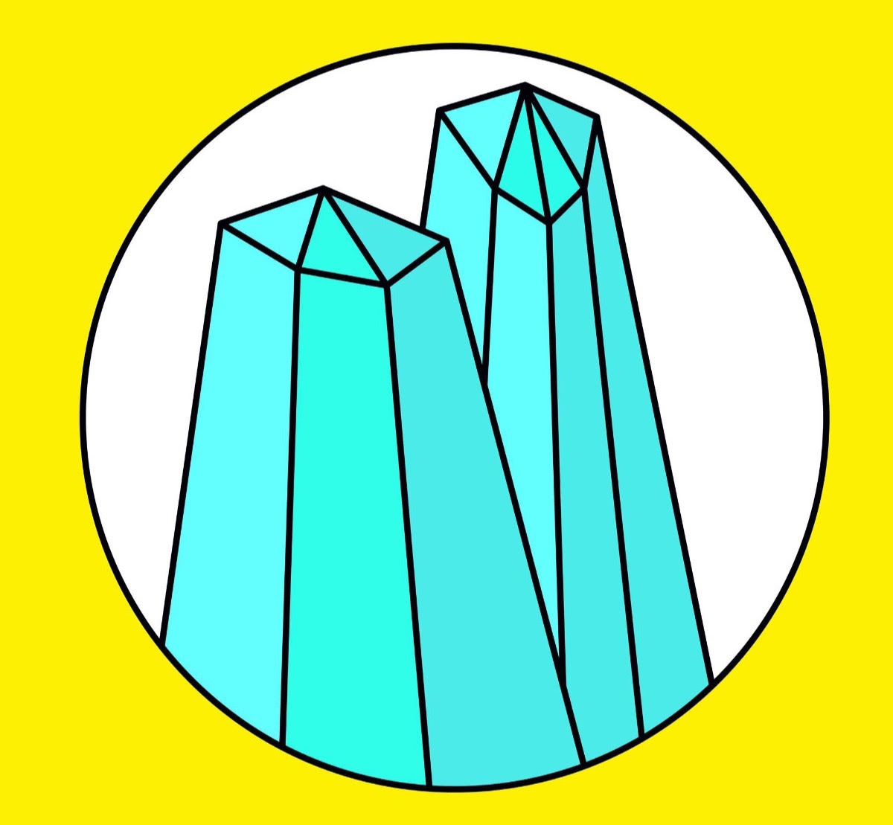
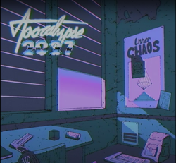
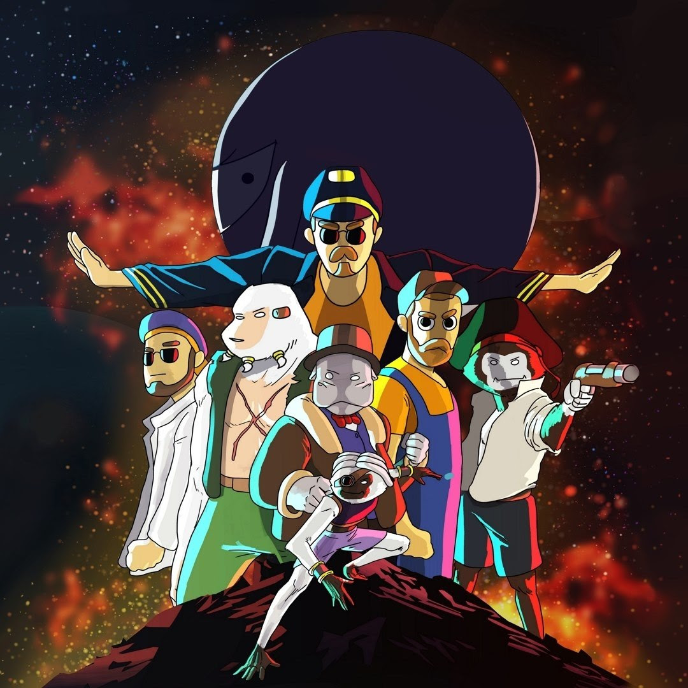
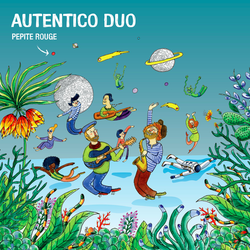
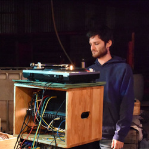
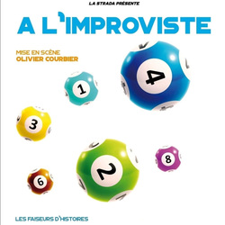

Programmation Artistique
Les artistes présents à l'évenement
Digne héritier des enfants fous de Salut c'est cool, c'est Roland Cristal qui nous fera l'honneur de carboniser le dancefloor, samedi soir. Avec sa techno acide et bon enfant mais non sans tabassage, la descente d'organes sera joyeuse !
 La Synthwave sombrement catchy de Apocalypse 2027s'invite à Opus ! Avec ses synthés effrénés et ses ambiances tout droit sorties des plus grands films de John Carpenter ou des slasher 80's, les popotins seront mouvants !
Lozarey Celui qui a enflammé le Facebook littéraire avec sa "Chanson d'oedipe", défendra pour la première fois sur scène ses compositions. Ses chansons humoristiques et acoustiques seront l'apéritif parfait au menu de ce Premier Opus pour une détente de vos zygomatiques en douceur.
Une ska tout à fait spatial qui balance du lourd, proposé par Faz-B L'équipage du Géocroiseur EthylDub-420 explore le Kosmos afin d'élucider le mystère de la "Matière Noire". Ces 7 mercenaires proposent une musique Rock puissante et Festive, s'inspirant de leurs aventures à travers la Galaxie !
Une rencontre authentique entre deux êtres qui voyagent sans limites dans le monde des possible. Embarcation immédiate avec Autentico Duo. Une Guitare et un saxophone pour faire le tour du monde de la France jusqu'en Amérique du Sud.
Imprégné de la culture du sound system, Paul propose un dub très roots qui vous fera danser une bonne partie de la nuit !
Avec sa collection de dubplates chinées un peu partout, les sirènes vont retentir !
 Du chill, du groove et de l'électro. C'est ce que vous proposera Didjiléjaune. Alors prépare ton meilleur slip et échauffe ton coude ! Ça va chiller grave.
Du chill, du groove et de l'électro. C'est ce que vous proposera Didjiléjaune. Alors prépare ton meilleur slip et échauffe ton coude ! Ça va chiller grave.
À déguster à l'apéro autour d'une bonne bière bien fraiche. (L'abus de chill est dangereux pour la santé ; à consommer avec modération).
 10 catégories, 4 comédiens, tout est improvisé à partir des thèmes du public. Voici les Faiseurs d'Histoires. Une troupe de comédien.ne.s improvisateurs qui saura vous emmener dans des univers divers variés avec humour. Un spectacle d'improvisation, frais et très rebondissant.